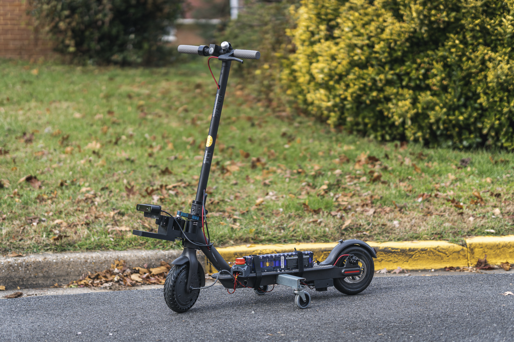
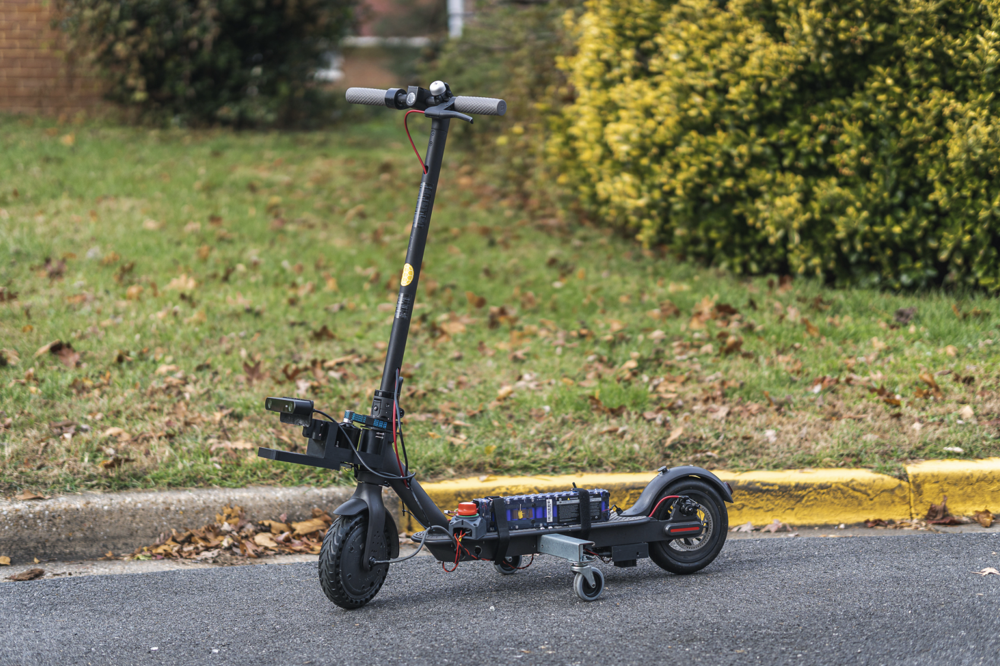

Introduction Autonomous electric scooter research started as a research project under Dr. Derek Paley at the University of Maryland, College Park in September 2019. The main objective of this project was to build an autonomous electric scooter platform with a mobile app which can be used to summon an electric scooter just like summoning an Uber or a Lyft.
Along with the initial team, I worked on the foundation of this project by creating some earlier prototype units and concepts. The first two images shown above are the earlier prototypes of the autonomous e-scooter.
Tech Stack The electric scooter uses Nvidia Jeston Nano as the brain, ZED stereo camera for vision and tracking and Odrive BLDC for steering. For motion the actuators from the electric scooters are repurposed by rewiring them to the ODrive motor controller. Power to the scooter is supplied to through the batteries already avaiable in the electric scooter.
Apart from foundation work, here are the other major activities I participated into:
➜ Developed analytical models for an electrical scooter self-righting mechanism applying engineering first principles, created simulations, constructed prototype, and conducted HIL testing. [Patent Disclosure Completed]
➜ Conducted hardware and software test experiments by building an autonomous vehicle test bench integrating perception and localization sensors (Intel RealSense Depth and Tracking Camera) for SLAM, and actuators (BLDC Motors and Controllers).
➜ Successfully estimated the position of the autonomous electric scooter with an accuracy of 0.5 meters by fusing the GPS, IMU and Visual Odometry data streams using an Extended Kalman filter.
➜ Directed the research team in data accumulation, data annotation, 3D virtual environment creation and optimization of the C++ and Python autonomy codebase.
➜ Created Multi agent based pedestrian simulations in Vissim to analyze electric scooter social force theory model.